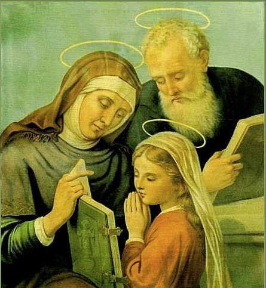

SANTA ANA
FUNÇÃO: Protetora dos avós
DIA 26 de julho
Santa Ana ou Sant'Ana é a mãe de Nossa Senhora e avó de Jesus. Sobre ela, porém, há poucos dados biográficos. As referências que chegaram até nós sobre os pais de Maria foram deixadas pelo Proto-Evangelho de Tiago, um livro escrito provavelmente no primeiro Século e que não faz parte dos Evangelhos Canônicos, ou seja, aqueles reconhecidos pela Igreja como oficiais. Porém, o Evangelho de Tiago é uma obra importante da antiguidade e citada em diversos escritos dos padres da Igreja Oriental, como Epifânio e Gregório de Nissa.
O nome a descendência de Santa Ana
O nome “Ana” vem do hebraico “Hanna” e significa “graça”. Santa Ana era de família descendente do sacerdote Aarão. Ela era esposa de um santo: São Joaquim que, por sua vez, era descendente da família real de Davi. Nesse casamento estava composta a nobreza da qual Maria seria descendente e, posteriormente, Jesus.
Um casal comum
Santa Ana se casou jovem como toda moça em Israel naquele tempo. A tradição diz que São Joaquim era um homem de posses e bem situado na sociedade. Ambos viviam em Jerusalém, ao lado da piscina de Betesda, onde hoje está a Basílica de Santana. O casal se relacionava com pessoas de todo Israel, especialmente nas festas em Jerusalém.
A esterilidade de Santa Ana
Santa Ana, porém, tinha um grave problema: era estéril. Não conseguia engravidar mesmo depois de anos de casada. Em Israel daquele tempo a esterilidade era sempre atribuída à mulher, por causa da falta de conhecimento. A mulher estéril era vista como amaldiçoada por Deus. Por isso, Santa Ana sofreu grandes humilhações. São Joaquim, por sua vez, era censurado pelos sacerdotes por não ter filhos. Tudo isso fazia com que o casal sofresse bastante.
A concepção milagrosa de Maria
Santa Ana e São Joaquim, porém, eram pessoas de fé e confiavam em Deus, apesar de todo sofrimento que viviam. Assim, num dado momento da vida, São Joaquim resolveu retirar-se no deserto, para rezar e fazer penitência. Nessa ocasião, um anjo lhe apareceu e disse que suas orações tinham sido ouvidas.
Ao mesmo tempo o anjo apareceu também a Santa Ana confirmando que as orações do casal tinham sido ouvidas. Assim, pouco tempo depois que São Joaquim voltou para casa, Ana engravidou. Parece que através do sofrimento, Deus estava preparando aquele casal para gerar Maria, a virgem pura concebida sem pecado.
O nascimento de Maria
Segundo a Tradição cristã, no dia 8 de setembro do ano 20 a. C., Santa Ana deu à luz uma linda menina à qual o casal colocou o nome de Miriam, que em hebraico, significa “Senhora da Luz”. Na tradução para o latim ficou “Maria”. A vergonha tinha ficado para trás. E daquela que todos diziam ser estéril nasceu Nossa Senhora, a mãe do Salvador.
Santa Ana e São Joaquim são de fundamental importância na História da Salvação. Não só pelo nascimento de Maria, mas também pela formação que deram à futura Mãe do Salvador.
Devoção à Santa Ana
A devoção a Santa Ana e São Joaquim é muito antiga no Oriente. Eles foram cultuados desde o começo do cristianismo. No século VI a devoção a eles já era enraizada entre os fiéis do Oriente. No Ocidente, o culto a Santana remonta ao século VIII. Em 710, as relíquias da avó de Jesus foram levadas de Israel para Constantinopla e, de lá, foram distribuídas para várias igrejas. A maior dessas relíquias ficou na igreja de Sant’Ana, em Durem, Alemanha.
No ano de 1584, o Papa Gregório XIII fixou a data da festa de Sant’Ana em 26 de Julho. Na década de 1960 o Papa Paulo VI juntou a esta data a comemoração de São Joaquim. Por isso, no dia 26 de julho comemora-se também o “Dia dos Avós”.
Aparição de Santa Ana em Auray, na França
Em 1625 um fato extraordinário mudaria o foco da devoção a Santana. No vilarejo de Auray, na França, ela apareceu a um homem chamado Yves Nicolazic. Na aparição Santana disse: “Yves Nicolazic, não temas. Eu sou Ana, mãe de Maria. Dize a teu pároco que neste local da Terra, chamado Bocenno, existia, outrora, uma capela que me era dedicada, e isso, antes mesmo que houvesse qualquer aldeia por aqui. Era a primeira capela erguida em toda a região. Ela foi destruída há 924 anos e seis meses. Desejo que uma nova capela seja erguida neste local, o mais depressa possível, e que cuideis dela, porque Deus quer que eu seja honrada nesta área."
Yves Nicolazic obedeceu e levou o povo do vilarejo ao local indicado por Santana. Lá, encontraram a antiga imagem, tal qual Santana havia dito. O bispo da diocese de Vannes, Dom Rosmadec, mandou investigar os fatos. Os estudiosos confirmaram tudo que fora anunciado por Santana.
Yves Nicolazic tornou-se construtor. Ele foi pedreiro e mestre de obras na construção da Igreja de Santana em Auray.
O papa João Paulo II fez uma visita a Auray em 1996. Depois disso, o número de peregrinos subiu para cerca de 800 mil pessoas por ano.
Santa Ana padroeira dos avós
Santana é a padroeira dos avós. Mas também é invocada pelas mulheres que não conseguem engravidar. Santana é também a padroeira da educação, tendo educado Nossa Senhora e influenciado profundamente na educação de Jesus.
Santa Ana, avó de Jesus. Ela sabe dar o carinho e atenção das avós. Ela conhece o aconchego que só as avós podem dar aos netos. Por isso, recorramos a Sant Ana com confiança. Com a mesma confiança que nos aproximamos de nossas tão queridas avós para pedir as graças que precisamos.
Então é isso! Espero que você tenha gostado do nosso artigo!!